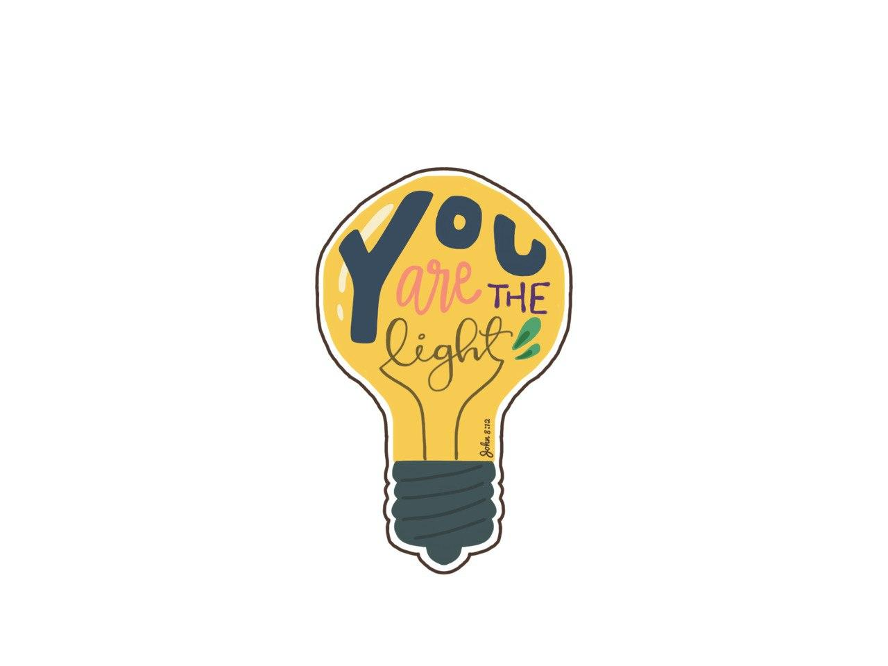
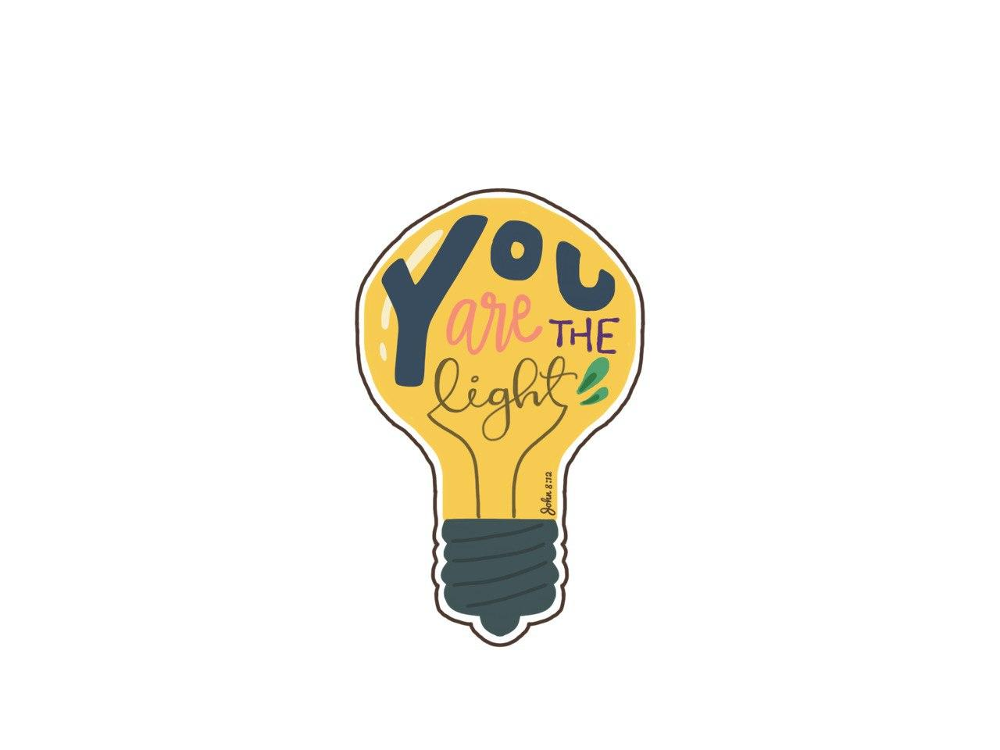

Nepal
In 2019, I embarked on an Overseas CIP trip to Nepal, aiming to
teach children in rural Nepal English, provide better facilities
and equipment for the school, and bring joy to the children we
will be interacting with.
It was a 15 day journey with lots of ups and downs (both
literally and figuratively), but I learnt a lot from this
experience which I will carry with me for a long time.
Pre-trip Fundraising and Planning
A brief overview of what I was tasked to do for the upcoming months at NYC.Raising Funds
Before the actual trip, we had to raise sufficient funds that will be used to purchase equipment and stationery we wanted to give to the school. I was in charge of designing the stickers we planned to sell at various churches, and with my ipad and index finger (I don’t have a stylus), I came up with 5 designs that we printed to sell.
 

Curriculum Planning
During the pre-trip planning, we also crafted out an english
curriculum we could teach to the Nepalese children. This task
turned out to be more difficult than we anticipated, as we quickly
realised that the school had children aged between 6-12, and the
english standards of the children varied greatly between each
other. With our small team of 12 people, we were unable to figure
out how we wanted to split the manpower across the age groups.
Ultimately, we decided to go for a more unconventional approach,
where the curriculum planned consisted mainly of nursery rhymes,
popular children stories and arts and crafts. We figured that with
the cultural difference, exposure to the nursery rhymes and
stories we Singaporeans grew up with (such as twinkle twinkle
little star, or the 3 little pigs) would be a fun change of pace
for the children, and help them to learn english words through
these songs and stories, regardless of their age.
So, after 2 months of fundraising, planning, preparing the
materials and rehearsing, we finally left for Nepal!
The Trip
Carrying out the plans we hadDeep in the rural country side of Tanahun, we arrived at Shree Satya English Boarding School, where the children were waiting for our arrival. From here, we had 5 days to interact with the children and set our plan into action. After their morning assembly, we started off by playing some ice breakers like blow wind blow and duck duck goose to shake off the childrens’ shyness around us. The games indeed helped the children loosen up, but their enthusiasm very literally kicked up a storm cloud as they ran about the sandy field of their school!
We split the school day into 2; the first half we taught the children nursery rhymes and a crafting activity, and the second half we combined all the classes for a storytelling-skit session. Despite our pre-trip preparations and rehearsals, we still struggled to to engage the children throughout the lessons due to the language barrier. We had to adapt our plans and relied heavily on drawings and gestures, to help the children understand what we were trying to convey. There was also a lot of intelligent guessess on our part when trying to understand what the children were trying to say to us. However, as the days went by, we got better at communicating with the children and oby the end of the week, most of the children seemed to have developed a love for Twinkle Twinkle Little Star, and they would be singing it at every opportunity they had.
On the last day, we realised we had a surplus of materials so we decided to hold an impromptu Funfair! We came up with 5 stations - Bowling, 5 Stones, Balloon Sculpting, Chaptay and a Photobooth, and prepared stamp cards for each student to track which stations they have completed. The games were simple but the funfair turned out to be a huge success! The children were extremely eager to complete the stamp cards as quickly as possible, and even the teachers ended up taking part in the games as well! Needless to say the day was chaotic and tiring, but given how well received it was by the school, we were glad to have changed up our original plans for this funfair.
Final Thoughts
What I've learnt from this 4 month journeyImportance of Planning
This trip reinforced my believe that proper planning is crucial to ensure things can get done. Our research during our pre-trip planning, despite being tedious and time consuming, proved to be of invaluable help when we arrived at the school. The idea of preparing nursery rhymes, storytelling-skits and arts and crafts really allowed us to engage with the children on a deeper level, and we would not have been able to bond with them well if we had stuck to our original idea of having a more traditional classroom based lesson, especially with the language barrier.
Adaptability
No matter how in depth your plan is, there will always be unexpected surprises on execution day. During this trip, there were multiple occasions where we had to change our plans (like how we had to change the physical games we planned to sitting games due to the dust clouds being kicked up, or how school was postponed by a day because of the sudden passing of an important minister which thus declared the day a public holiday). The only thing we can do is keep a cool head, adapt to the changes and think of possible solutions given the constraints ASAP in order for the day to continue to run smoothly.